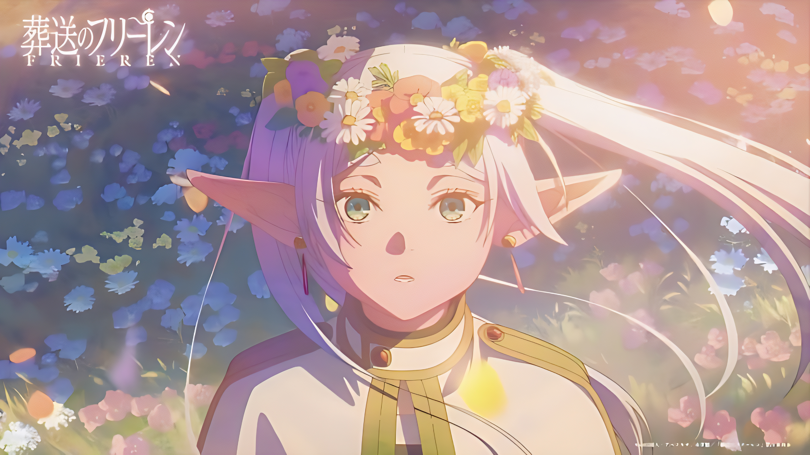

✦ View Work
✦ Enchantment
The Eternal Garden
A spell that preserves flowers in time, never wilting, never fading — a quiet kind of forever.
✦ A traveller through time ✦
A thousand years of spells, stories, and flowers gathered along the way. Welcome to my corner of the world.

Like Frieren gathering spells across a thousand-year journey, I collect experiences, skills, and stories. Each project is a new chapter — some brief, some spanning years — all woven into the tapestry of who I am.
My work lives at the intersection of craft and wonder. I believe the smallest details hold the most magic.
Each work carries a memory of the world as it was.
Even a thousand years of life is not enough to know everything about this world. That is why the journey never truly ends.
✦ Frieren, Mage of the Party ✦

Frieren is a mage who journeyed with heroes to defeat the Demon King — yet found herself adrift when the adventure ended and time moved on without her.
Her story is one of learning to treasure the fleeting warmth of those who pass through her immortal life. Every spell she keeps is a memory she refused to let go.
Read more →
This site is inspired by Frieren's quiet, deliberate way of moving through the world — observing, collecting, remembering.
Like her, I believe the small things are the ones worth keeping: a good conversation, a solved problem, a moment of unexpected beauty.
Get in touch →Like selecting the right spell — visual craft that speaks without words, precise and considered.
Every great journey deserves to be told. I weave narrative into everything, from captions to campaigns.
Constructing spaces that feel lived-in, meaningful, and worth exploring.
Research and archiving: the quiet discipline of collecting what others have forgotten to preserve.
Some spells take a hundred years to master. The best things deserve unhurried attention.
Collecting new abilities, nurturing old ones. The spell-book is never full.
Whether you have a quest in mind or simply wish to share a cup of tea, I would love to hear from you.